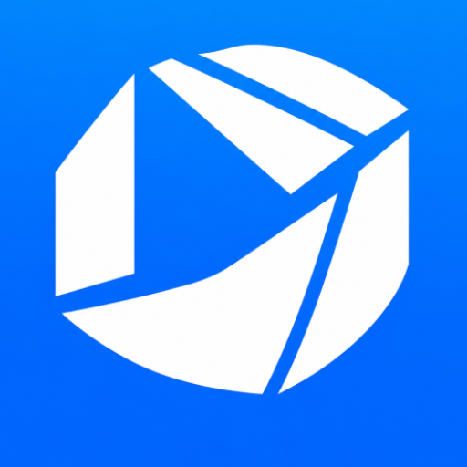
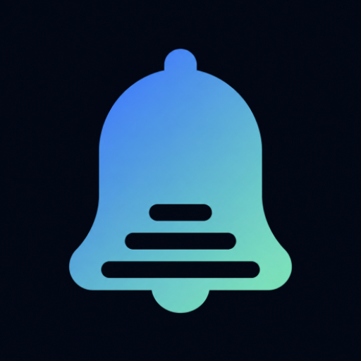
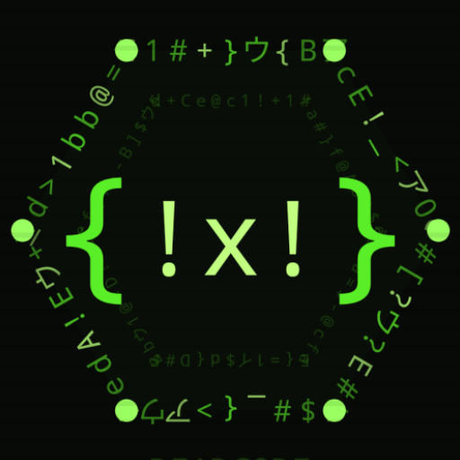
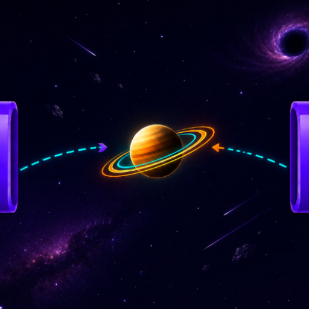
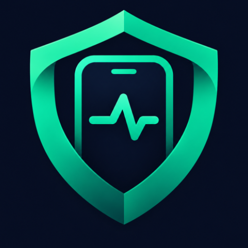

Privacy Policies
Each of our apps has its own privacy policy below. Pick an app to jump to its full policy.

Odak
NotifyOS
Dead Code
Ring Rider
SentinelDeveloper: Beydemir Technology · Contact: beydemir.technology@gmail.com
We do not sell personal data from any of our apps. Each policy below applies only to the app it names.
Odak — Privacy Policy
This Privacy Policy explains how Beydemir Technology ("we", "us", "the developer")
handles information in connection with the "Odak" mobile application (the "App",
package name com.beydemir.odak). By downloading and using the App, you
agree to the data practices described in this policy.
Odak is, first and foremost, a personal planner that runs on your device. Most of your data never leaves your phone. The sections below clearly identify the specific cases where data does leave the device.
1. What this policy covers
Odak is a productivity app offering task/to-do management, a calendar, notes, location-based reminders, an AI-powered chat feature called "AI Coach", optional cloud backup, and an optional subscription ("Odak Plus"). This document explains what data the App collects, how it is used, who it may be shared with, and what rights you have.
2. Data we collect and how we use it
2.1. Data stored locally on your device
The following data is stored only on your own device (in a local database and local preference storage) and is never sent to any server operated by us:
- Tasks: title, description, date/time, category, priority, recurrence settings, completion status, and location-based reminder details
- Notes: title, content, category, colour, pinned status
- Secure Notes: encrypted on-device with a device-bound key (Android Keystore). Never included in cloud backups and never leaves the device.
- App preferences: the name you enter, theme, font, language, notification time/sound, snooze duration, calendar style, light/dark mode preference, and similar personalisation settings
- AI Coach conversation history: the text of your past conversations is stored on your device (see section 2.2 — this text is also sent to third-party AI services when generating a response)
- Places you save (e.g. Home, Work) and their geofence radius, used for location-based reminders (see section 2.3)
This data is used to provide the App's core functionality (task/note management, reminder notifications, statistics, home-screen widgets). No account system is required to use the App's core features, so this data is not transmitted to us and only you can access it.
Note: Depending on your device's operating system settings, Android's "automatic backup" feature may include the App's data in a cloud backup associated with your own Google account. This process is managed by Google; we do not have access to these backups.
2.2. Data sent to third parties for the AI Coach feature
When you chat with AI Coach or use smart/voice task entry, the following information is sent over the internet to third-party AI providers — Google's Gemini API and/or Groq API (used as an alternative/fallback provider) — in order to generate a relevant response:
- The text of the chat message you type or speak
- The name you have entered in the App (if any)
- A summary of your tasks (total/completed task counts, upcoming and overdue tasks, priority levels — task titles may be included)
This data is sent only to generate a response to that specific request; we do not store it on any server of our own. However, this data does reach Google's (Gemini API) or Groq's servers for processing, and is handled under each provider's own privacy policy:
- Google Privacy Policy: policies.google.com/privacy
- Groq Privacy Policy: groq.com/privacy-policy
If there is no internet connection, AI Coach falls back to a simple on-device offline response mechanism, and in that case no data is sent to any external service.
2.3. Location data (only if you turn it on)
The location-based reminders feature accesses your location only after you enable it yourself. To notify you when you approach or leave a place you've saved (Home, Work, etc.), the App uses the device's geofencing service and the background location permission.
- Your location stays on your device. We do not send your location coordinates to our servers, store them, or share them with anyone. Geofence monitoring runs entirely on-device.
- Choosing a place (map/address): when you pick a place on the map, map tiles are fetched from OpenFreeMap; to resolve the address of the point you picked, the coordinate is sent to the OpenStreetMap Nominatim service.
- Nearby suggestions (premium, optional): if you enable this feature and ask the coach for nearby places, the relevant coordinate is sent to the OpenStreetMap Overpass service to find nearby businesses.
- You can turn these features off at any time from Settings > Location, and you can revoke the location permission from your device settings. While the feature is off, we do not access your location.
2.4. Cloud backup (optional, only if you turn it on)
When you enable cloud backup, an encrypted (AES-256) copy of your data is uploaded to a
private, app-specific space (appDataFolder) in your own Google Drive
account, using Google Sign-In to authenticate. Only Odak can access this space — no
other user, and not us, can see it. Secure Notes are never included in this backup.
Odak requests a single Google scope for this feature,
https://www.googleapis.com/auth/drive.appdata, which grants access only to
the App's own hidden folder and gives no access to any other file in your Drive.
Our use of Google Drive data obtained through this feature complies with the Google API Services User Data Policy, including the Limited Use requirements: this data is used only to upload/restore your own backup at your request, is never used for advertising, is never read by humans, and is never transferred to third parties.
2.5. Subscriptions and purchases (Odak Plus)
Odak offers an optional subscription ("Odak Plus") and one-time purchase processed through Google Play Billing. Payment is handled entirely by Google; we never receive or store your card or financial details. Google may share limited purchase/subscription status information with us (e.g. whether you have an active subscription) so the App can unlock the corresponding features.
2.6. Contacts (address book)
In the "task actions" feature (calling/messaging/emailing directly from a task with one tap), you pick a contact via the system contact picker. Only the selected contact's number/email and label are stored locally on your device, in order to perform that action. We do not read, copy, or send your entire address book to any server.
2.7. Advertising (Google AdMob)
To support the App being offered free of charge, the App displays banner, interstitial, rewarded, and app-open ads through Google AdMob (Google Mobile Ads SDK). No ads are shown under an active Odak Plus subscription. Google may collect the following types of data for ad delivery, measurement, and (to the extent you have consented) personalisation:
- Advertising ID and similar device identifiers
- General device and app usage information
- Approximate location (derived from IP address)
This data collection is carried out directly by Google, under Google's own privacy policy and advertising policies:
- Google Ads Policies: policies.google.com/technologies/ads
- Google Privacy Policy: policies.google.com/privacy
You can manage your ad personalisation preferences from your device settings (Google Settings > Ads).
2.8. Notifications
Task reminders and daily/weekly summaries are scheduled entirely on your device using Android's local notification and alarm systems, and (for location-based reminders) the device's geofencing service. No data is sent to any server for these notifications; the App does not use a remote/push notification infrastructure.
2.9. Call notes (Odak Plus, only if you turn it on)
If you turn on Call notes in Settings, Odak shows a small bubble on screen during phone and WhatsApp calls, so you can save a note or a task without leaving the call. The feature is off by default and needs two special accesses that you grant yourself in your device settings:
- Notification access: used only to notice that a call has started or ended, from the ongoing call notification of your phone app or WhatsApp, and to read the contact name or number shown in that notification. Every other notification is ignored the moment it arrives; it is not read, stored, or sent anywhere.
- Display over other apps: used only to show the bubble on top of the call screen.
Odak never listens to, records, or transcribes your calls, and does not access call audio, your call history, or your address book for this feature. The contact name is used only to title the note or task you choose to save; that note or task is stored on your device like any other (and is included in your encrypted cloud backup only if you have enabled it). Nothing about your calls is sent to us or to any third party. You can turn the feature off at any time in Settings > Connections, and revoke both accesses from your device settings.
3. Third-party services
Odak uses the following third-party services. Each is governed by its own privacy policy:
- Google Play Billing (subscriptions/purchases) — policies.google.com/privacy
- Google AdMob (ads, free tier) — policies.google.com/technologies/ads
- Google Drive API (your own encrypted backup) — policies.google.com/privacy
- Google Sign-In (cloud backup authentication) — policies.google.com/privacy
- Google Gemini API (AI coach/task responses) — ai.google.dev/gemini-api/terms
- Groq (AI response processing) — groq.com/privacy-policy
- OpenFreeMap (map tiles) — openfreemap.org
- OpenStreetMap Nominatim (address resolution) — openstreetmap.org/copyright
- OpenStreetMap Overpass (nearby place search, premium/optional) — openstreetmap.org/copyright
4. Data we do not collect
For clarity, Odak does not:
- create a required user account or request an email address/password to use its core features,
- collect or access your location unless you explicitly enable location-based reminders,
- access your contacts beyond the single contact you explicitly pick for a task action,
- listen to, record, or access the audio of your calls, or read your call history,
- store your payment or card details (handled entirely by Google Play Billing),
- use any analytics or crash-reporting infrastructure of its own.
5. Data sharing and sale
We do not sell your personal data. We share data only with the service providers listed in section 3, only to the extent necessary to provide the relevant feature, and only for that purpose. We may disclose data where required by applicable law.
6. Permissions used
The App requests the following Android permissions in order to provide its features:
- INTERNET: Required to generate AI Coach responses and process subscriptions.
- POST_NOTIFICATIONS: Required for task reminders and summaries.
- SCHEDULE_EXACT_ALARM / USE_EXACT_ALARM: Required so reminders fire at the exact time you set.
- RECEIVE_BOOT_COMPLETED: Required to restore scheduled reminders after your device restarts.
- ACCESS_FINE_LOCATION / ACCESS_COARSE_LOCATION / ACCESS_BACKGROUND_LOCATION: Required only for the location-based reminders feature, and only once you enable it (see section 2.3). Not requested or used otherwise.
- RECORD_AUDIO: Required for the voice task entry feature; it is only activated when you press the microphone button.
- VIBRATE: Used for haptic feedback.
- USE_FULL_SCREEN_INTENT: Allows important reminders to be shown as a full-screen notification.
- Notification access (BIND_NOTIFICATION_LISTENER_SERVICE): Used only by the Call notes feature, and only once you enable it and grant access, to detect calls from the call notification (see section 2.9).
- SYSTEM_ALERT_WINDOW (display over other apps): Used only by the Call notes feature, to show the bubble over the call screen (see section 2.9).
None of these permissions are used to collect data in the background beyond the specific feature they enable.
7. Data security
Data stored locally on your device is protected by the standard app-level protections provided by the Android operating system (app-specific private storage). Secure Notes and cloud backups are additionally encrypted (device-bound key / AES-256, respectively). Communication with the AI Coach, advertising, billing, and cloud-backup services is carried out over encrypted connections (HTTPS/TLS). However, no method of transmission over the internet or electronic storage can be guaranteed to be 100% secure.
8. Data retention and deletion
Your tasks, notes, saved places, and chat history remain stored on your device until you delete them or uninstall the App. You can delete this data by:
- deleting individual tasks/notes/places from within the App,
- uninstalling the App from your device (this removes all of the App's local data from your device),
- going to Android Settings > Apps > Odak > Storage > Clear Data.
If you have enabled cloud backup, you can delete it by turning the feature off in the App, or by revoking Odak's access from drive.google.com > Settings > Manage apps > Odak > Delete hidden app data / Disconnect. You can revoke Odak's access to your Google Account at any time from myaccount.google.com/permissions.
Since requests sent to AI Coach are not stored by us, please refer to the relevant provider's own policy (Google, Groq) regarding how long they process or retain such data on their side.
9. Children's privacy
Odak is not directed at children under the age of 13, and we do not knowingly collect data from users in this age group. If you believe a child under 13 has provided us with data, please contact us using the information in section 11; we will take appropriate action promptly.
10. Your rights
Because most of your data is stored locally on your device, you directly control access to, correction of, and deletion of your data (through the App's interface and your device settings). Depending on your jurisdiction (e.g. under regulations such as GDPR or Turkey's KVKK), you may have additional rights to access, correct, delete, or restrict processing of your data. You can contact us using the information in section 11 to exercise these rights or ask questions.
11. Contact us
If you have questions about this Privacy Policy, you can reach us at:
- Developer: Beydemir Technology
- Email: beydemir.technology@gmail.com
12. Changes to this policy
We may update this Privacy Policy from time to time. If we make material changes, we will post the updated policy on this page and update the "Last updated" date at the top. Your continued use of the App after any changes constitutes your acceptance of the updated policy.
↑ Back to all policies
NotifyOS — Privacy Policy
Summary
NotifyOS does not collect any data. There is nothing to summarize beyond that, but here are the details anyway.
What data is collected
None, off your device. NotifyOS does not have the INTERNET permission — this is a deliberate, verifiable architectural choice, not a policy promise. The app cannot open a network connection even if it wanted to; you can confirm this yourself by checking the app's permissions in Android Settings, or by inspecting the APK's declared permissions.
What is stored on your device
To do its job (managing your notifications with rules you create), NotifyOS stores the following locally, in the app's private storage:
- Captured notifications (an archive you control — searchable, deletable)
- The rules, groups, tags, and templates you create
- Vibration patterns you record or customize
- App usage statistics derived from notifications (e.g. how many were silenced) — used only to show you your own stats and, if enabled, to learn which notifications you tend to act on
- Your app settings and preferences
- A backup file, only if and when you explicitly export one to a location you choose
None of this data is transmitted anywhere. It stays on your device.
Who your data is shared with
No one. NotifyOS has no server, no analytics SDK, no advertising SDK, and no crash-reporting service that phones home. There is no "we" receiving your data — the app doesn't have a way to send it.
Purchases
If you buy NotifyOS, the purchase is handled entirely by Google Play. NotifyOS uses the Play Billing library only to check and restore your purchase state (so a reinstall or new device recognizes you already own the app). This happens over Play's own secure channel between your device and the Play Store app already installed on it — NotifyOS itself still makes no direct network connection.
To confirm that your copy was bought, NotifyOS also asks the Google Play Store app on your phone for a licence check (at most once a week). Google Play performs it under Google's privacy policy (policies.google.com/privacy); we never receive the result. If Google Play cannot be reached or reports an error, NotifyOS keeps working. Only if Google Play confirms that the copy is not licensed (for example after a refund) does NotifyOS pause its rules; your notifications then appear as usual.
Notification access
NotifyOS requires Notification Access (a standard Android permission) to read and act on your notifications according to the rules you set up. This permission is what lets any notification-management app function; it is not used for anything beyond the rule engine you configure yourself.
How to delete your data
- From inside the app: Settings lets you clear your notification archive, clear learned interaction data, clear trace/rule-log history, and clear media, individually or all at once.
- By uninstalling: Removing NotifyOS deletes all of its local data immediately — there is nothing left on any server to separately delete, because nothing was ever sent to one.
Changes to this policy
If this policy changes, the "Last updated" date above will change with it. Given the app's architecture (no network access), the substance of this policy — no data collection — is not expected to change.
Contact
Questions about this policy or the app: beydemir.technology@gmail.com
↑ Back to all policiesDead Code — Privacy Policy
This Privacy Policy describes how DeadCode ("the App", "we", "us") handles information when you use our Android game. We are committed to being transparent about data practices and protecting your privacy.
1. Information We Collect
Most of the App runs entirely on your device — game progress, settings, and preferences for the single-player Waves and Sections modes are stored locally using Android's Room database and DataStore and never leave your device.
The App also offers an optional Online multiplayer mode. If you choose to use it, a limited set of information is sent to our backend (Google Firebase, see Section 2) solely to make online matches work — see Section 3 for exactly what that is. If you never tap "Online" in the app, none of this applies to you.
2. Online Multiplayer Mode — Google Firebase
Online mode is built on Google Firebase (Firebase Authentication and Cloud Firestore). When you tap "Online" for the first time, the App:
- Signs you in with Firebase Anonymous Authentication — this assigns your installation a random anonymous ID. It does not require or collect your name, email address, phone number, or any account credentials.
- Asks you to choose a display name (a nickname of your choosing) shown to the opponent you are matched with and on the public online leaderboard. Please avoid entering your real name or other personal information here, since other players and anyone viewing the leaderboard can see it.
While playing an online match, the App stores in Firebase (Cloud Firestore):
- Your anonymous ID and chosen display name
- Temporary matchmaking records (created while searching for or hosting a match, deleted once the match starts or is cancelled)
- Live match state needed for the match itself (e.g. which words have been typed/transferred) — deleted when the match ends
- Your online win/loss/matches-played counters, used for the public leaderboard
This data is used solely to enable matchmaking, run the online match, and display the leaderboard. We do not sell this data or use it for advertising. It is processed by Google Firebase in accordance with Google's own privacy and security practices — see firebase.google.com/support/privacy and policies.google.com/privacy.
To request deletion of your online display name and win/loss statistics, contact us at the address in Section 8 with your in-app display name — we will remove the corresponding Firebase record.
3. Third-Party Services — Google AdMob
The App displays rewarded and interstitial advertisements powered by Google AdMob. AdMob may collect the following information to serve and measure ads:
- Advertising ID (Android Ad ID)
- Device model, OS version, and language
- IP address (used to approximate general location)
- Ad interaction events (impressions, clicks, reward completions)
This data is collected and processed by Google in accordance with their own privacy policy. You can review Google's privacy practices at: policies.google.com/privacy
You can opt out of personalized advertising on your Android device by going to Settings → Google → Ads → Opt out of Ads Personalization or by resetting your Advertising ID.
4. Data We Do NOT Collect
- Your real name, email address, phone number, or account credentials
- Precise GPS location
- Contacts, camera, or microphone data
- Payment or financial information
- Single-player (Waves/Sections) gameplay statistics — those stay on your device only
5. Local Data Storage
The App stores the following data locally on your device only (never sent anywhere):
- Single-player high scores and wave/section progress
- Sound and visual preference settings
- Onboarding and first-game tutorial state
- Your chosen online display name (also synced to Firebase, see Section 2, so it can be shown to opponents)
This locally-stored data is deleted when you uninstall the App. Data held in Firebase (see Section 2) is not automatically deleted on uninstall — contact us if you'd like it removed.
6. Children's Privacy
The App is not directed to children under the age of 13. We do not knowingly collect personal information from children. Online mode only collects an anonymous ID and a self-chosen display name — no verified identity information is required. If you believe a child has provided personal information through the App (e.g. a real name as their display name), please contact us so we can remove it.
7. Changes to This Policy
We may update this Privacy Policy from time to time. Any changes will be reflected by an updated date at the top of this page. Continued use of the App after changes are posted constitutes your acceptance of the updated policy.
8. Contact
If you have any questions or concerns about this Privacy Policy, or want data tied to your
online display name deleted, please contact us at:
beydemir.technology@gmail.com
Ring Rider — Privacy Policy
This Privacy Policy explains how Beydemir Technology ("we", "us") handles information when you play Ring Rider (the "Game") on Android. Ring Rider is an offline arcade game: it has no account system and no server of our own.
1. Data stored on your device
The Game saves the following only on your device, in the app's private storage:
- Level progress, collected coins and unlocked skins
- Mission and daily-reward progress
- Game settings such as sound
This data is never sent to us — we have no server to receive it. It is deleted when you uninstall the Game.
2. Advertising (Google AdMob)
Ring Rider is free and shows banner and interstitial ads through Google AdMob. To serve and measure ads, Google may collect:
- Advertising ID (Android Ad ID)
- Device model, operating system version and language
- IP address (used to approximate general location)
- Ad interaction events (impressions and clicks)
This data is collected and processed directly by Google under its own policies: policies.google.com/privacy and policies.google.com/technologies/ads. You can opt out of personalized ads on your device under Settings → Google → Ads, or reset your Advertising ID there.
3. Data we do not collect
- Your name, email address, phone number or any account details — there is no sign-in
- Precise location, contacts, camera, microphone or files
- Payment information
- Your gameplay data — it stays on your device
4. Permissions used
- INTERNET: needed only to load ads.
- VIBRATE: haptic feedback during play.
5. Data sharing and sale
We do not sell personal data. Apart from the advertising data Google AdMob collects as described in section 2, the Game shares nothing with anyone.
6. Children's privacy
Ring Rider is not directed to children under the age of 13, and we do not knowingly collect personal information from children.
7. Changes to this policy
We may update this policy from time to time. Changes will be reflected by an updated date at the top of this section.
8. Contact
Questions about this policy: beydemir.technology@gmail.com
↑ Back to all policiesSentinel — Privacy Policy
This Privacy Policy explains how Beydemir Technology ("we", "us") handles information in connection with Sentinel (the "App"), an offline security alarm for Android phones. Sentinel watches the phone's own sensors and sounds an alarm on the phone itself. It has no account system and no server of our own.
Summary
Sentinel does not collect any data. Everything it records stays on your phone, and you can delete it at any time.
1. No network access
Sentinel does not request the INTERNET permission or any other network permission. This is a deliberate, verifiable design choice: without it, Android does not allow the App to open a network connection. You can confirm this in Android Settings > Apps > Sentinel > Permissions, or by inspecting the APK's declared permissions. The App contains no analytics, advertising, crash-reporting or remote-configuration SDK, no Firebase and no account sign-in.
2. Data stored on your device
To do its job, Sentinel stores the following only on your device, in the App's private storage:
- Event history: event type, time, mode, risk level, outcome and which trigger fired (for example "Charger disconnected, 7:53 PM, disarmed with PIN")
- Protection sessions: start and end time, mode and why the session ended
- Battery level at the start and end of a session, used only for the battery figure on the Statistics screen
- Calibration summary: a noise level measured from the motion sensor; raw sensor readings are never stored
- Settings and rules: your modes and their triggers, schedules, custom mode names, theme and language, the optional contact note shown in Sentinel's notifications, the optional spoken-warning text, the name and file reference of an alarm sound you picked, and the name and address of the one paired Bluetooth device you picked for the Bluetooth trigger
- PIN verification data: your PIN itself is never stored, only a salted hash, encrypted with a key held in the Android Keystore
Sentinel never records photos, audio, location, contacts or device identifiers. This data is excluded from Android cloud backup and device-to-device transfer, and it is never sent to us — we have no way to receive it.
3. Files you create
Only when you ask for it, Sentinel can export your event history (CSV or PDF report) or a password-encrypted backup of your settings. You choose where the file is saved using Android's file picker. Sentinel sends nothing anywhere; if you choose a cloud folder, that provider's app may upload the file under its own privacy policy. The settings backup never contains your PIN or your event history.
4. Permissions used
- Foreground service: keeps protection running while you are away, with a visible notification for as long as it runs.
- Notifications: show the protection status and local alarm alerts.
- Vibrate and wake lock: alarm vibration, and keeping monitoring active while the screen is off.
- Biometric (optional): unlock with your fingerprint instead of typing your PIN; the PIN always works.
- Alarms & reminders and run at startup (optional): start scheduled protection on time, and set the next scheduled start again after the phone restarts. Sentinel never starts protection by itself after a restart.
- Nearby devices / Bluetooth (optional): only for the "Bluetooth device disconnects" trigger — to list your paired devices so you can pick one, and to be told when that one device connects or disconnects. Sentinel does not scan for devices and does not use location.
- Device admin (optional): only if you turn it on, to lock the screen when the siren starts and to notice wrong unlock attempts while protection is running. Sentinel cannot wipe your phone, change your screen lock or read what you type.
Sentinel does not request camera, microphone, location, contacts or storage permissions. The torch works without camera access, and an alarm sound you pick is opened through Android's file picker for that one file only. The optional spoken warning uses a voice already installed on your phone that works offline.
5. Purchases
Sentinel is a paid app with no in-app purchases, subscriptions or ads. The purchase is handled entirely by Google Play under Google's own privacy policy (policies.google.com/privacy); we do not receive your payment details.
To confirm that your copy was bought, the App asks the Google Play Store app on your phone (at most once a week). Google Play performs this licence check under the same Google policy. The App itself sends nothing, still has no network permission, and we never receive the result. If Google Play cannot be reached or reports an error, the App keeps working.
6. Data sharing and sale
No one. We do not collect, share or sell any data from Sentinel.
7. How long data is kept and how to delete it
- Automatically: events older than the period you choose (7, 30, 90 or 365 days; 30 by default) are deleted.
- From inside the App: you can delete a single event, all events, or all local data in Settings > PIN & privacy > Privacy & data. Deleting all data also turns off Sentinel's device admin and releases access to your alarm sound file.
- By uninstalling: removing Sentinel deletes all of its data. There is nothing to delete on any server, because nothing was ever sent to one.
8. Children's privacy
Sentinel is not directed to children under the age of 13, and we do not knowingly collect personal information from children. Sentinel does not collect personal information from anyone.
9. Changes to this policy
If this policy changes, the "Last updated" date above will change with it. Because the App has no network access, the substance of this policy — no data collection — is not expected to change.
10. Contact
Questions about this policy or the App: beydemir.technology@gmail.com
↑ Back to all policies